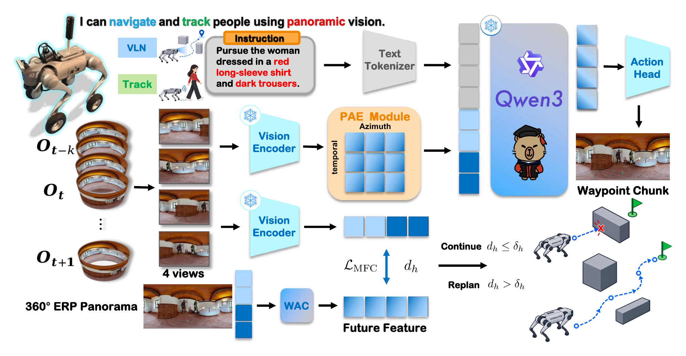
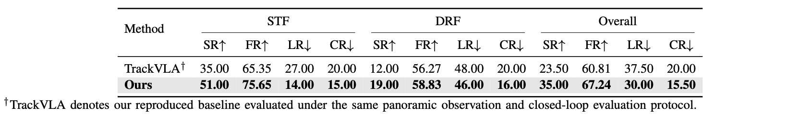
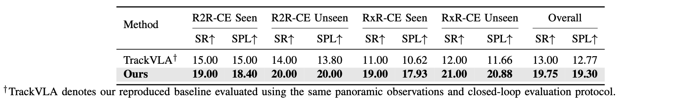
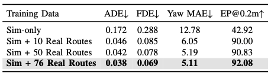
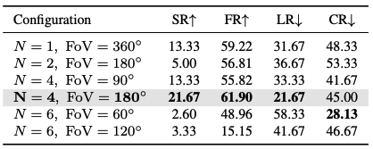
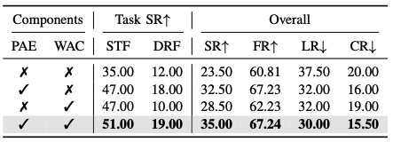

Unified Panoramic VLA
UniTrackPLA unifies dynamic person following and language-guided navigation through shared panoramic perception, vision-language representations, and continuous waypoint actions; PAE jointly models azimuth and temporal context.
Panoramic perception. A new benchmark. Two tasks. One unified model.
General-purpose embodied robots should support both navigation toward language-specified destinations and dynamic person tracking under arbitrary initial target azimuths. However, existing methods typically rely on forward-facing observations and address these tasks with separate policies, limiting omnidirectional perception and unified closed-loop control. We present UniTrackPLA, a unified panorama-language-action model for instruction-guided navigation and dynamic person tracking.
Its Panoramic-Aware Encoding (PAE) preserves the temporal and azimuthal structure of perspective views projected from each panorama, enabling perspective-pretrained visual encoders to process omnidirectional observations. A shared vision-language backbone grounds instructions in the panoramic context and predicts continuous robot-centric waypoint chunks for both tasks. World-Action Consistency (WAC) further predicts action-conditioned future visual states and verifies waypoint prefixes online, allowing reliable actions to be reused while triggering replanning upon inconsistency.
We also introduce OmniTrackNav-Bench, comprising 5,000 simulated tracking trajectories, 10,000 simulated VLN routes, and 96 verified real-world routes, providing 919,978 waypoint-supervision instances. UniTrackPLA improves overall tracking SR from 23.50% to 35.00% and Omni-VLN SR/SPL from 13.00%/12.77% to 19.75%/19.29%. Incorporating 76 real-world routes further improves held-out EP@0.2m from 42.92% to 92.08%. Closed-loop experiments on a Go2-W robot demonstrate unified panoramic tracking and navigation across indoor and outdoor environments.
23.50% → 35.00%
13.00% → 19.75%
42.92% → 92.08%
UniTrackPLA unifies dynamic person following and language-guided navigation through shared panoramic perception, vision-language representations, and continuous waypoint actions; PAE jointly models azimuth and temporal context.
WAC predicts the future latent effects of waypoint prefixes, adaptively regulating the action horizon and deciding whether to continue execution or trigger replanning.
A unified benchmark supports joint training and consistent evaluation across panoramic tracking and navigation, with extensive simulation and real-robot validation.

Overview of the proposed UniTrackPLA pipeline: the upper policy branch encodes four perspective views with PAE and fuses them with language instructions to predict waypoint chunks, while the lower WAC branch predicts action-conditioned future features and evaluates future-state consistency to continue execution or trigger replanning; snowflakes denote frozen modules.

Evaluation set: 200 episodes · 100 STF + 100 DRF

Evaluation set: 400 routes · 100 per split

Evaluation set: 20 route-disjoint held-out routes

Validation set: 60 episodes · 30 STF + 30 DRF

Evaluation set: 200 episodes · 100 STF + 100 DRF